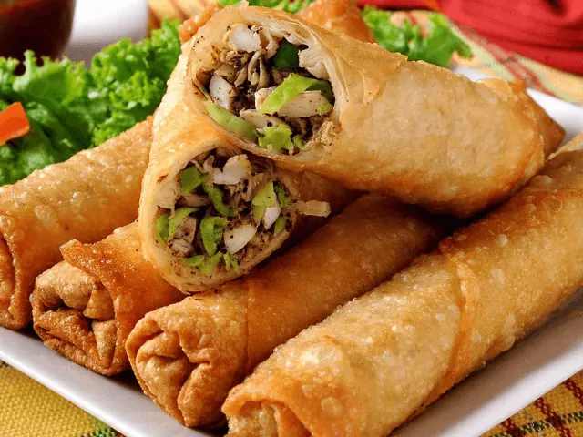
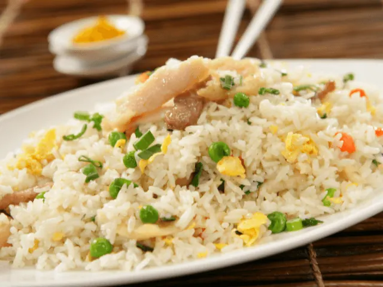

Laat je Culinair Verrassen in Chinese Sfeer
Gepubliceerd op 14 februari 2023, bijgewerkt op 20 oktober 2023
Onderdeel van de gids Restaurants in Nijmegen

De Chinese keuken is zonder twijfel één van de meest populaire keukens onder de Nederlandse bevolking. Chinees eten is eigenlijk bij iedereen wel geliefd, en wordt in veel gezinnen wekelijks genuttigd. Ons land zit dan ook bomvol Chinese specialiteitenrestaurants. Het zijn er te veel om op te noemen. Ook in het altijd gezellige Nijmegen vind je een aantal steengoede Chinese restaurants. Benieuwd welk restaurant in Nijmegen de lekkerste Chinese gerechten aanbiedt? Wij zochten het voor je uit!
In het centrum van Nijmegen kun je terecht bij restaurants Peking en China Delight. Deze twee eetgelegenheden zijn zeer sfeervol, en bieden een ruime keuze aan specialiteiten uit de Chinese keuken. In Nijmegen-Zuid vind je restaurant De Roos, waar je ook optimaal kunt genieten van diverse culinaire hoogstandjes uit China.
Bevind jij je momenteel in Nijmegen, of bezoek je deze bruisende stad binnenkort? Dan ben je ongetwijfeld nog op zoek naar een goed restaurant, waar je na een dagje shoppen kunt genieten van een culinair hoogstandje. In dat geval dien je de Chinese restaurants uit het onderstaande artikel absoluut in overweging te nemen. Wij weten zeker dat deze restaurants jou niet teleur zullen stellen.
Overzicht Chinese restaurants in Nijmegen
Deze Chinese restaurants in Nijmegen moet je uitproberen!
Chinees eten is enorm divers. China is immers een groot land, en er bestaat dan ook veel diversiteit in deze bijzondere keuken. Veel culinaire hoogstandjes uit dit land zijn onder Nederlanders favoriet. Denk bijvoorbeeld aan de Pekingeend, Foe Young Hai en Babi Panggang, om slechts enkele populaire voorbeelden te noemen.
Nu ben jij ongetwijfeld benieuwd in welke Chinese restaurants in Nijmegen deze culinaire hoogstandjes het beste smaken. Onderstaand bespreken we verschillende restaurants van topkwaliteit waar jij terecht kunt.
– Restaurant Peking
In het centrum van Nijmegen vind je het Chinees Indische restaurant Peking. Het is een zeer populair restaurant dat onder velen favoriet is. De Oosterse stijl van het restaurant maakt de ervaring helemaal compleet. Jij bevindt je in Oosterse sfeer terwijl je geniet van de allerbeste Chinese specialiteiten.
Dit restaurant kenmerkt zich zonder twijfel met het veelzijdige menu. Je bent hier aan het juiste adres voor al het lekkers uit de Chinese keuken, maar ook andere Aziatische gerechten zijn hier te vinden. Ook de Indische en Thaise keuken worden hier sterk vertegenwoordigd.
Het restaurant wordt door zijn gasten enorm hoog gewaardeerd. Wat zegt men zoal over dit sfeervolle restaurant?
- Fijne Oosterse sfeer
- Goede service
- Keer op keer verrassend lekkere gerechten
Alhoewel een avondje in dit uitermate sfeervolle restaurant zeker aan te raden is, zal je wellicht ook blij zijn te horen dat je de Chinese specialiteiten uit restaurant Peking thuis kunt laten bezorgen. Je kunt dus helemaal op jouw eigen manier genieten van de heerlijke Chinese keuken.

– China Delight
Het tweede restaurant dat we graag onder de loep nemen is restaurant China Delight. Ook dit restaurant ligt in het stadscentrum van Nijmegen. Het betreft wederom een eetgelegenheid waar diverse Aziatische keukens elkaar ontmoeten.
De onderstaande kenmerken zijn onlosmakelijk verbonden met restaurant China Delight.
- Lopend buffet
- Chinees, Japans, Thais en Indische gerechten
- Koreaanse barbecue
- Stel je eigen wok gerechten samen
- Onbeperkt genieten
In restaurant China Delight krijg je echt waar voor je geld. Daar is geen twijfel over mogelijk. Ben jij dus op zoek naar een veelzijdig en sfeervol restaurant waar je kunt genieten van een uitgebreide Aziatische keuken? Breng dan een bezoekje aan restaurant China Delight.

– Restaurant De Roos
Restaurant De Roos bestaat al meer dan 40 jaar. Het restaurant is gevestigd in Nijmegen-Zuid. Dit restaurant is van alle markten thuis, maar absoluut gespecialiseerd in de allerlekkerste Chinese gerechten.
Of je nu op zoek bent naar een afhaalchinees of juist een sfeervol restaurant om gezellig met een groepje vrienden of familie te gaan eten, bij restaurant De Roos is alles mogelijk. Ook grote groepen kunnen in dit restaurant terug, bijvoorbeeld tijdens een verjaardag of andere feestelijke gebeurtenis.
Vanaf 15 personen biedt restaurant De Roos zelfs een cateringservice aan. De chef-koks in dit heerlijke restaurant weten hun gasten telkens weer te verrassen met de lekkerste Chinese gerechten. Kom langs en probeer het zelf! Hier zul je geen spijt van krijgen.
– Orient Plaza Honyun
De laatste eetgelegenheid die ook zeker niet mag ontbreken in onze lijst is restaurant Orient Plaza in Nijmegen. Al meer dan 30 jaar is dit een vertrouwde plek voor verschillende Oriëntaalse restaurants.
Orient Plaza bestaat uit vier verschillende restaurants. Eén daarvan is specifiek gefocust op de Chinese keuken. Dit is restaurant Honyun. In dit veelzijdige Chinees Kantonese restaurant geniet je van alle authentieke gerechten uit de Chinese keuken. Van Pekingeend tot zwaluwnestjes, de mogelijkheden zijn zeer divers.
Naast het Chinese restaurant Honyun, zijn er onder het dak van Orient Plaza nog drie andere restaurants te vinden.
- Jiro (sushi&grill)
- Kyoto (Japans)
- Korea (Koreaanse bbq)
Wanneer we het hebben over Orient Plaza, kunnen we dus wel spreken van een zeer veelzijdige eetgelegenheid met daarin voor ieder wat wils.